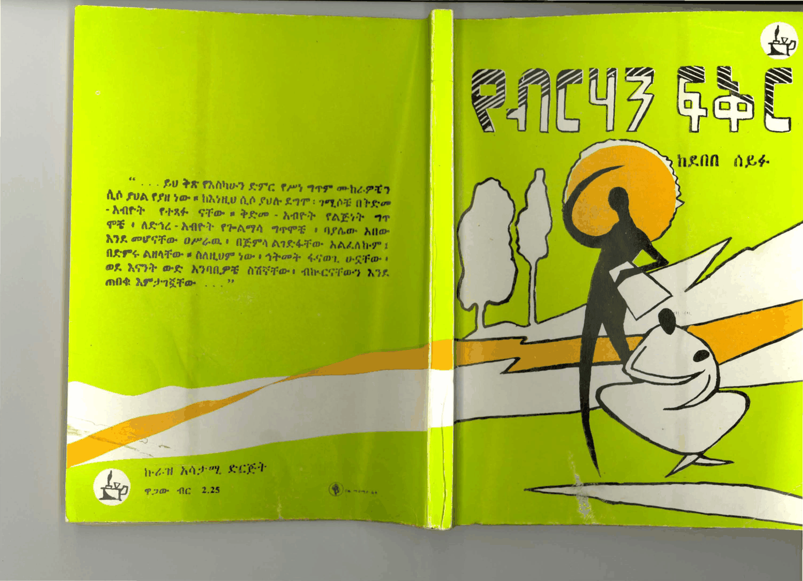

Poem
ስለ ሠርፍ አድር
Sile Serf Adir
About the Serf and Night

(በጠባብ - የሴትና የወንድ ድምፅ)
ስለ ሠርፍ አድር
ታሪኩ ነው ቅሬ ነው ታሪክ
አለቃት የለለው መጠን ወይም ልክ ፤
ደም ሆኖ ተፈጨ
በመስከረም ፀሐይ በለባት ብርሃት ዜና
የምልም አጆች ታዩ ተገለጡ በዕርቃን ጐመና
ምጓት—ትጓኝካ
ቋም ቢያርላቸው በደሙ ሳይም ቢያውቅ
ከወገአበር ቀርበው ተፈጠሙ ጨሩ ።
(በድምር—የወንድ-የሴት ድምፅ)
በሰማያዊ መስከረም ሰማይ
የአስጠኝኝ አባቶች ፀሐይ
ብራል—ዕነቃማሽ—ሲሳይ፡
ምን ያህል ዘመን ምዕት ዓመት
ምን ይላል ትግል ምን ጥረት ፤
ልወዲአ.ሂምን ያህል ጨለማ
ጨለማን ያህል ሰላት
ገረፈ ፡ በድል ለመምጣት ?
(በጠባብ-የሴት ድምፅ)
መስከረም
የብዘ-ሃን ብርሃኑ ሰማይ
ማፍ ሩማቅ አደባባይ
አባቶች ዕነቃማሽ-ሲሳይ
አይምሩ አዕብቃት
ይጐማዝኑ ጯጊያችን
ከበ ግርአና ጸጋዎችሽ ፡
ድልላቸው ነውና ድልሽ ፡
ድልላቸው ነውና ድልአችሽ ።
In this collection
- 01አል ሌላ ዓለምAle Lela Alem
- 02ድንቄም መምህርDinkem Memhir
- 03በጥኝትBetingit
- 04ወልቱWeltu
- 05የሕወት ጅጅYehiwet Gige
- 06ይርጋ ዓለምYirga Alem
- 07ያቺ ቀንጔፄYachi Qengwetse
- 08ያቺ ቀንጔፄ (ቀጥሎ)Yachi Qengwetse (Cont)
- 09ዳእቴ (አንዲት የሰራም ሴት)Daete (Andit Yeseram Set)
- 10አዴ ሳንቆ (አንድ የሰራም ወንድ)Ade Sanqo (And Yeseram Wend)
- 11ሰንፄ ለልማማቾቹSenshe Lelmamachoche
- 12ትልኃለች እቺንTilhalet Echine
- 13የሳቱ ልጅYesatu Lej
- 14የሳቱ ልጅ (ቀጥሎ)Yesatu Lej (Qetlo)
- 15የሳቱ ልጅ (መጨረሻ)Yesatu Lej (Meceresha)
- 16የሤትማ ግርዋትYeshetma Girwat
- 17አቤ የኔ ዝምታ ጣምርታAbe Yene Zimta Tamrta
- 18የሤትማ ግርዋት (ቀጥሎ)Yeshetma Girwat (Qetlo)
- 19ልጅቱ — የዘመኖችዋLijitu — Yezemenochwa
- 20ዕንስትEnsit
- 21ዕንስት (ቀጠሮ)Ensit (Qetero)
- 22፳ር በይነት ፳ርZir Beyinet Zir
- 23ዘመዴን ስሰመውZmeden SissemeW
- 24እንትንን በመካከል እየሰማኝEntinin Bemekakel Eyisemany
- 25እለ ጤና በል አማለኝEle tena bel amalen
- 26እሱ ነው — እሱEsu new -- Esu
- 27ፄላን እንዲህZelan Endih
- 28ብቻ መሣኛችንBicha Mesanyachin
- 29ዘርዕ እብርት ማሞችZer'e Ebrt Mamoch
- 30ልዘንክ አሙኜLzenk Amuigne
- 31በየነን ስማዛት ስታስቅስ በደፋBeyenen Smazat Stasqis Bedefa
- 32ቋጥኝQwatgn
- 33በንትን ያሻውን ዘርBentin Yashawun Zer
- 34ትዝታን ማስታወስTiztan Mastawes
- 35ገና በልጅነትGen Belyjinet
- 36አሮማዊ ፍቅርAromawi Fikir
- 37የዕ ዕለYe Eele
- 38መስከረምMeskerem
- 39መስከረም (ቀጠሎ)Meskerem (Qetelo)
- 40የብዞችን ድምፅYe-Bezochin Dimts
- 41የ-፪ኛው ጕልበትYe-2tegna Gulbet
- 42ስለ ሠርፍ አድርSile Serf Adir
- 43እነሆ በቀEneho Beqe
- 44የቅንጣትትን ዞር የዘርቱን ንጉማ ማደሪያ ሰዕቢ እሰክርYe-Qintatetin Zor Ye-Zertun Niguma Maderiya Se'bi Esekir
- 45በሰሙ ሠየማትBesemu Seyemat
- 46በሰሙ ሠየማት (ቀጠሎ)Besemu Seyemat (Qetelo)
- 47ትዝታ — ክብርTizita — Kibir
- 48እስከʹተወጣ ሤራችንIske teweta sherachin
- 49እንዳች ፍቅር ወፔ የተግባር ጥረቶች ከ - አግሃግመሽ በለቢ የጸደቆች ቋሚ ሕውአትሽ ለወጌ ፍሬ ሳንች መታሰቢያIndach Fikir Wope YeTigbar Tiritoch ke - Aghagmesh BeLabi YeTsedqoch Qwami Hiwatish LeWoge Fire Sanch Metasebiya
- 50ፍቅርና ተግባር (አንድ ቅንጣት አባባ)Fikirna Tigbar (And Qinitat Ababa)
- 51አይ ጅኒ አይ ጅኒAy Jini Ay Jini
- 52እየፋን የመላውIyeffan Yemelaw
- 53ያቺን ማት ቀንYachin Mat Ken
- 54ጊዜ ሆይGize Hoy
- 55የታ፯ን ዳ፯ን የመህበሡን ክብ፯ትYetazen Danen Meheberun Kibet
- 56ጛሡችGezoch
- 57እንዯማ እንደ ዛፍEndema Ende Zaf